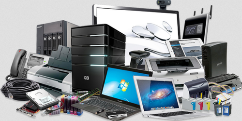

We’ll identify the technology needs required to streamline your processes to save you time, which will allow you to generate critical information essential to the operation of your business. Let us manage your technology and we’ll ensure you get the most cost-effective solutions to your technical challenges. You can also choose the most convenient delivery method for you, be it remotely or at your offices.
when I give technical support, do it quickly, correctly, efficiently and professionally every time. I could go on and on but just take a minute to look at the growing list of Testimonials from my satisfied friends.. You don't have to go far down the list to see that I must be doing something right and why they trust me after all these years with their technology needs.